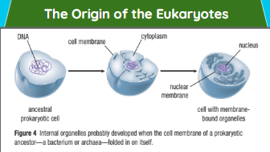
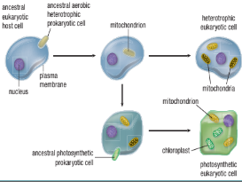
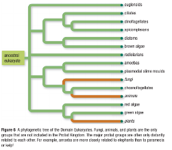
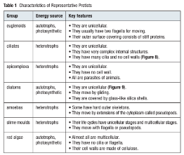

are a diverse collection of organisms. While exceptions exist, they are primarily microscopic and unicellular or made up of a single cell. The cells of protists are highly organized with a nucleus and specialized cellular machinery called organelles.
Callout
Why Protists Are Important
Protists that perform photosynthesis, along with some prokaryotes, are the major producers in the world’s oceans.
Non-photosynthetic protists are important consumers, especially at the microscopic level, where they dominate the lowest levels of most aquatic food pyramids.
Protists are abundant in moist terrestrial environments, including soil, but their ecological roles in these ecosystems are not understood as well.
Some protists are valuable to humans. If you like sushi, you have eaten nori, the seaweed used to wrap sushi rolls. Nori is the common name for several species of Porphyra, a multicellular protist
Protists were the first eukaryotes—their cells have a nucleus and organelles bound by membranes. These internal membranes likely developed from the folded cell membrane of an ancestral prokaryotic cell.

Mitochondria and chloroplasts are thought to have originated by endosymbiosis.
Endosymbiosis is a relationship in which a single-celled organism lives within the cell(s) of another organism; recent findings suggest this may be very common.

Callout
Classification and Phylogeny
Kingdom Protista has traditionally been a “catch-all” for any species that did not fit into the other major kingdoms of life.

Characteristics
Many protists have very complex cells
Some protists have many copies of their chromosomes and very large amounts of DNA.
They have an eyespot for detecting light, a stiff but flexible supporting layer called a pellicle, and a large flagellum for moving.

They are covered by glass-like silica shells.
Their life cycles have unicellular stages and multicellular stages.
They usually have two flagella for moving.
Some have hard outer skeletons.
They have no cilia or flagella.